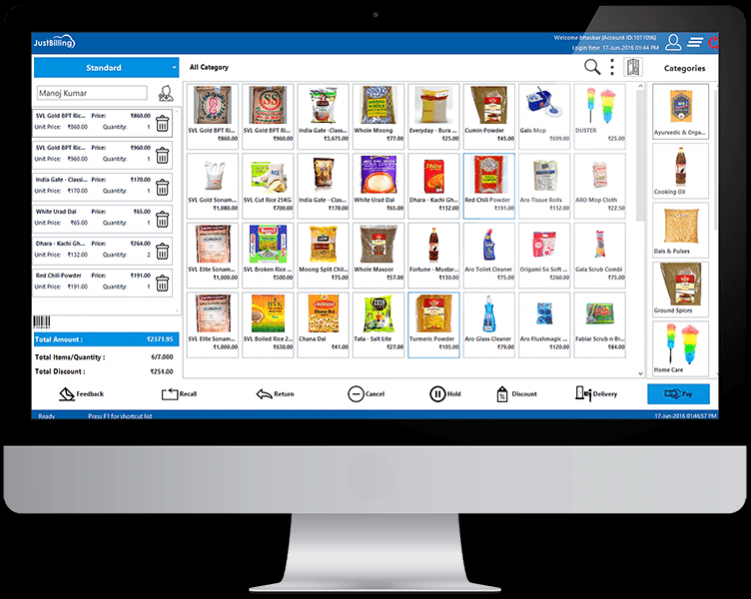
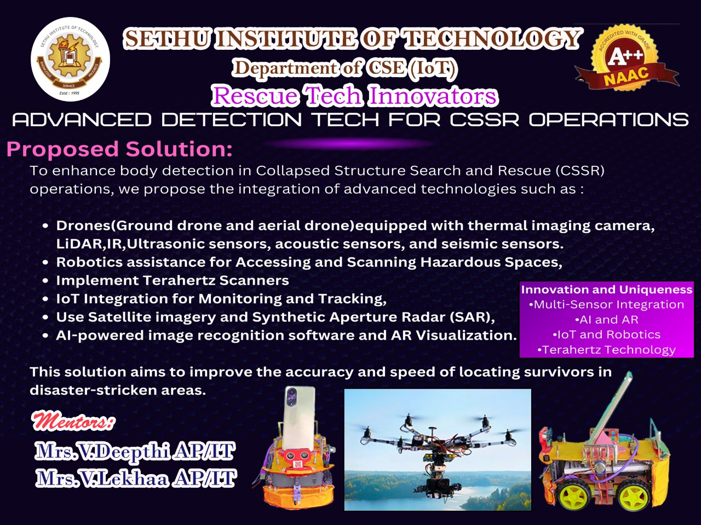
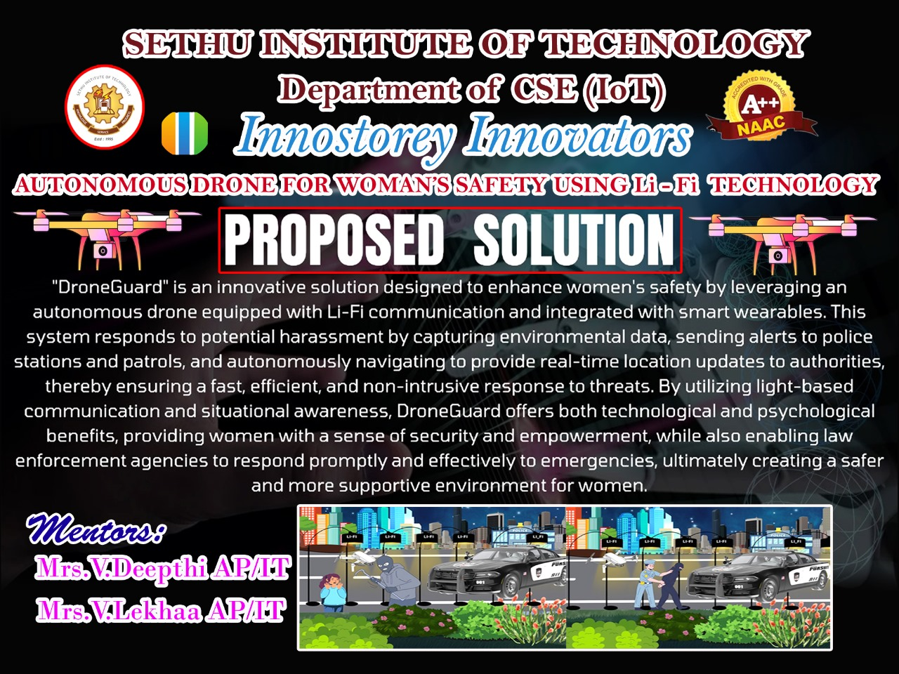
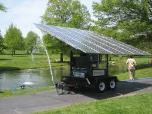
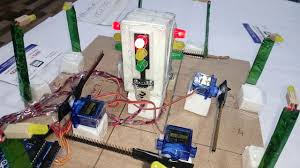

Our Innovative Projects
At InnoStorey Innovations Pvt Ltd, we take pride in developing cutting-edge solutions that redefine industries. Below are some of our key projects:
Showcasing Our Successes
Explore our portfolio of innovative projects that demonstrate our expertise in delivering tailored technology solutions.
Retail Management Platform
A comprehensive platform that streamlines inventory, sales, and customer data for retail chains.
- Technologies: Inventory Management, Sales Analytics, Customer Data Integration
- Challenges: Data Silos, Real-time Analytics, UI Design
- Outcomes: +30% Efficiency, Centralized Data, Better Decision-Making

Healthcare Records System
A secure, scalable cloud platform for managing electronic health records across hospitals.
- Technologies: Cloud Computing, Data Security, EHR Integration
- Challenges: Privacy Compliance, Multi-user Access, Scalability
- Outcomes: Improved Data Security, 99.9% Uptime, Better Patient Management

Educational e-Learning Portal
An interactive e-learning platform providing virtual classrooms, assessments, and progress tracking for students.
- Technologies: React, Node.js, Firebase, Video Streaming
- Challenges: Real-time Collaboration, Scalability, Cross-device Support
- Outcomes: 25K+ Users, Improved Engagement, Scalable Infrastructure

Smart Logistics Tracking
A real-time fleet and logistics tracking system designed to optimize delivery routes and reduce operational costs.
- Technologies: GPS Integration, AI-based Route Optimization, IoT Sensors
- Challenges: Real-time Accuracy, Hardware Integration, Predictive Analytics
- Outcomes: 40% Faster Delivery, 20% Fuel Savings, Lower Downtime

Our Innovative Research Projects
Pioneering research and technology-driven projects that push the boundaries of innovation.
Advanced Detection Technologies for CSSR Operations
In Collapsed Structure Search and Rescue (CSSR) operations, advanced detection technologies are vital for enhancing body detection and rescue efficiency. Our solution integrates specialized sensors and AI to accurately locate bodies in disaster-struck areas.
- Technologies: Thermal Imaging, GPR, CO₂ Sensors, Ultrasonic, LIDAR, IR, Acoustic & Seismic Sensors
- Enhancements: AI & Machine Learning, Multispectral Imaging, Drones (Aerial & Ground), IoT Networks, Augmented Reality
- Outcomes: Faster Detection, Real-Time Data Access, 3D Mapping, Enhanced Safety for Rescue Teams

Enhancing Diagnostic Accuracy: An AI-Powered Medical Imaging Tool
An AI-powered diagnostic tool that leverages advanced deep learning models to analyze medical images, providing highly accurate, real-time decision support to radiologists.
- Technologies: Deep Learning, Image Preprocessing, Adaptive Algorithms, Real-Time Processing, EHR Integration
- Features: Real-time analysis, continuous learning, seamless integration with medical systems
- Outcomes: +20% Diagnostic Accuracy, Reduced Diagnosis Time, Improved Patient Outcomes
AI-Powered Smart Grid System for Optimizing Renewable Energy Distribution and Consumption
An intelligent AI-powered smart grid system that optimizes the distribution and consumption of renewable energy through real-time data integration and IoT-enabled control.
- Technologies: AI Algorithms, IoT Devices, Real-Time Data Integration, Machine Learning, Renewable Energy Tech
- Unique Features: Dynamic energy flow management, demand forecasting, automated adjustments for grid stability
- Outcomes: Enhanced grid stability, maximized renewable energy usage, reduced energy waste and carbon emissions

Design and Implementation of an Autonomous Drone for Women's Safety Using Li-Fi Technology
An innovative autonomous drone system leveraging Li-Fi communication, QR code identification, and smart wearables integration to enhance women's safety by providing real-time alerts and location tracking to authorities.
- Technologies: Autonomous Drones, Li-Fi Communication, QR Code ID, Smart Wearables
- Features: Real-time threat detection, alerting police, autonomous navigation, secure light-based communication
- Outcomes: Faster response to harassment incidents, improved public safety, psychological reassurance

Engineering Mini Projects
Hands-on engineering projects showcasing practical problem-solving and innovative design.
IoT-Based Smart Home Automation
A mini project that enables remote control of home appliances using IoT and smartphone integration.
- Technologies: Arduino, ESP8266 WiFi Module, Mobile App
- Features: Remote switching, Real-time status updates, Energy monitoring
- Outcomes: Enhanced convenience, Energy savings

Automatic Street Light Control System
A system that automatically turns street lights on/off based on ambient light intensity using LDR sensors.
- Technologies: Microcontroller, LDR Sensor, Relay Module
- Features: Light sensing, Automated control, Energy efficient
- Outcomes: Reduced energy consumption, Extended bulb life

Bluetooth Controlled Robot Car
A robotic car controlled via Bluetooth using a mobile app for directional commands and obstacle detection.
- Technologies: Arduino, Bluetooth Module, Ultrasonic Sensor
- Features: Wireless control, Obstacle avoidance, Real-time feedback
- Outcomes: Practical robotics experience, Enhanced automation skills

Innovative School Students Projects
Encouraging young minds to innovate and create solutions that inspire future technologies.
Solar-Powered Water Purifier
A sustainable water purification system using solar energy designed to provide clean drinking water in rural areas.
- Technologies: Solar Panels, Filtration, Sustainable Design
- Challenges: Efficient Energy Use, Affordable Materials
- Outcomes: Improved Water Quality, Environmentally Friendly Solution

Smart Traffic Light System
A smart traffic light prototype that adjusts signal timing based on real-time traffic flow using sensors.
- Technologies: Microcontrollers, Sensors, IoT
- Challenges: Real-Time Data Processing, Hardware Integration
- Outcomes: Reduced Traffic Congestion, Enhanced Road Safety

Automated Plant Watering System
An automated system that waters plants based on soil moisture levels to promote efficient water use.
- Technologies: Sensors, Arduino, Automation
- Challenges: Sensor Calibration, Low Power Consumption
- Outcomes: Water Conservation, Healthier Plants

We continuously innovate to develop transformational projects that shape the future.